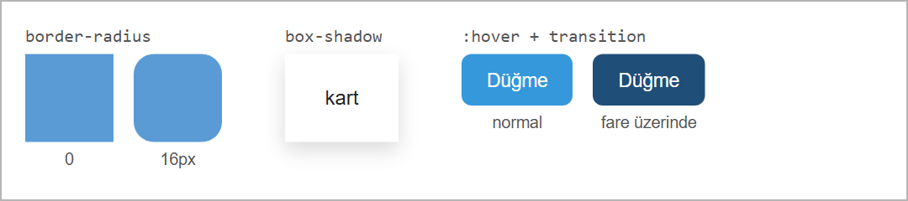
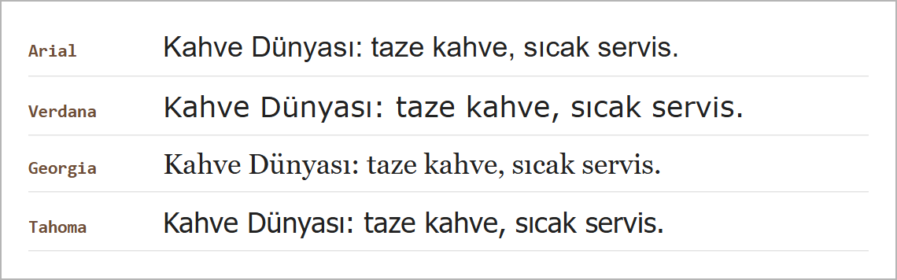
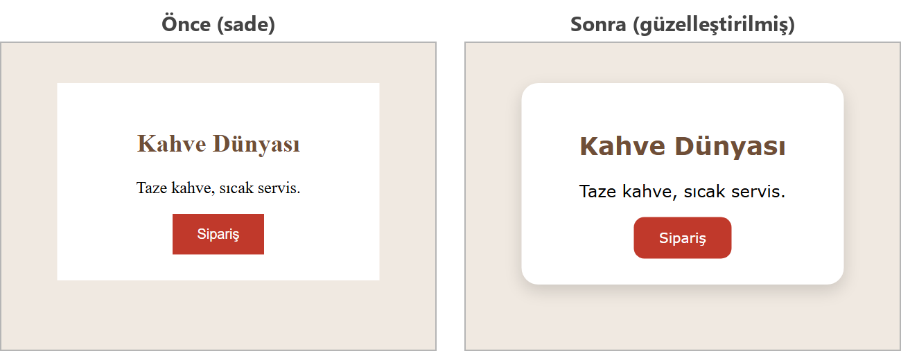

Geçişler ve Küçük Dokunuşlar
Bu sayfada
Aynı içerik, birkaç satır CSS ile çok farklı görünebilir: yuvarlatılmış köşeler, hafif bir gölge ya da fare üzerine gelince renk değiştiren bir düğme sayfayı daha özenli gösterir. Bu üç dokunuş aşağıda bir arada görülüyor:

1:hover: Fare Üzerine Gelince
:hover, bir öğenin üzerine fare gelince uygulanacak stili belirler. En çok düğmelerde ve bağlantılarda kullanılır.
.dugme {
background-color: #3498db;
color: white;
}
.dugme:hover {
background-color: #21618c; /* fare üzerine gelince koyulaşır */
}
2transition: Yumuşak Geçiş
:hover ile renk aniden değişir. transition, bu değişimi yumuşak ve animasyonlu hâle getirir. Değişim süresini saniye (s) ile yazarsınız.
.dugme {
background-color: #3498db;
transition: 0.3s; /* değişimler 0.3 saniyede yumuşak olur */
}
.dugme:hover {
background-color: #21618c;
}
transition, :hover'a değil, asıl (normal) öğeye yazılır. Böyle yazıldığında hem fare gelince hem de fare çekilince geçiş yumuşak olur. En sık yapılan hata, transition'ı yanlışlıkla :hover içine yazmaktır.
3border-radius: Yuvarlak Köşeler
Köşeleri yuvarlatır. Değer büyüdükçe köşeler daha yuvarlak olur.
.kart { border-radius: 12px; }
.avatar { border-radius: 50%; } /* kareyi tam daireye çevirir */
border-radius: 50%, kare bir öğeyi tam daire yapar; profil fotoğrafları için sık kullanılır.
4box-shadow: Gölge
Öğeye derinlik hissi veren bir gölge ekler. Dört değer sırayla yazılır: yatay kaydırma, dikey kaydırma, bulanıklık, renk.
.kart {
box-shadow: 0 4px 8px rgba(0, 0, 0, 0.2);
}
0→ yatay kaydırma yok.4px→ gölge 4px aşağıda.8px→ gölgenin bulanıklığı (yumuşaklığı).rgba(0, 0, 0, 0.2)→ yalnızca %20'si görünen, yani %80 saydam siyah.rgba, bir renge saydamlık eklemenin yoludur; son değer 0 (tamamen saydam) ile 1 (tamamen görünür) arasındadır.
5Yazı Tipi Seçme: Kurulu Yazı Tipleri
font-family özelliğini 6. haftada, CSS'e Giriş konusunda gördük. İnternet bağlantısı gerektirmeyen yazı tipleri, bilgisayarda zaten kurulu olanlardır. Aşağıdaki dördü Windows'ta kurulu gelir:

body {
font-family: Verdana, sans-serif; /* metin: Verdana */
}
h2 {
font-family: Georgia, serif; /* başlıklar: Georgia */
}
- Arial, Verdana, Tahoma harflerin uçlarında çıkıntı olmayan (tırnaksız) yazı tipleridir; ekranda kolay okunur.
- Georgia, harflerin uçlarında küçük çıkıntılar olan (tırnaklı) bir yazı tipidir; başlıklarda şık durur.
- Virgülden sonraki
sans-serif(tırnaksız) veserif(tırnaklı) yedek yazı tipleridir. İlk yazı tipi cihazda yoksa (örneğin bazı telefonlarda) ya da adı yanlış yazılmışsa tarayıcı bu yedeğe geçer.
font-family'de her zaman sonda yedek bir yazı tipi (sans-serif ya da serif) bırakın.
İnternet bağlantısı olan bir bilgisayarda Google Fonts (fonts.google.com) sitesinden seçilen bir yazı tipi, sitenin verdiği <link> etiketi <head>'e eklenerek kullanılabilir. İnternet yoksa bu yazı tipi yüklenmez ve tarayıcı yedek yazı tipini kullanır.
6Örnek: Bir Kartı Güzelleştirme
Şimdi hepsini birleştirelim: sade bir kartı alıp yuvarlak köşe, gölge, yeni bir yazı tipi ve hover'lı bir düğme ekleyerek güzelleştirelim.
<!DOCTYPE html>
<html lang="tr">
<head>
<meta charset="utf-8">
<title>Güzelleştirme</title>
<style>
body {
font-family: Verdana, sans-serif;
background-color: #f0e9e1;
}
.kart {
width: 260px;
background-color: white;
padding: 25px;
margin: 40px auto;
border-radius: 16px;
box-shadow: 0 6px 16px rgba(0, 0, 0, 0.15);
text-align: center;
}
.kart h2 {
color: #6f4e37;
}
.dugme {
background-color: #c0392b;
color: white;
padding: 12px 24px;
border: none;
border-radius: 10px;
font-family: inherit;
transition: 0.3s;
}
.dugme:hover {
background-color: #922b21;
}
</style>
</head>
<body>
<div class="kart">
<h2>Kahve Dünyası</h2>
<p>Taze kahve, sıcak servis.</p>
<button class="dugme">Sipariş</button>
</div>
</body>
</html>
Aynı içerik, dokunuşlardan önce ve sonra şöyle görünür:

Sağdaki kartta köşeler border-radius ile yuvarlatıldı, box-shadow ile gölge eklendi, Verdana yazı tipi kullanıldı ve düğme :hover + transition ile canlı hâle geldi. Düğmeler sayfanın yazı tipini kendiliğinden almaz; font-family: inherit; satırı düğmenin de sayfanın yazı tipini (Verdana) kullanmasını sağlar. İçerik değişmedi; yalnızca görünüm güzelleşti.
7Sıkça Yapılan 5 Hata
| Hata | Sonuç | Çözüm |
|---|---|---|
transition'ı :hover içine yazmak | Fare gelince renk yumuşak değişir, fare çekilince birden eski hâline döner | transition'ı asıl öğeye yazın |
Yazı tipi adını yanlış yazmak (font-family: Verdena, sans-serif;) | Tarayıcı o yazı tipini bulamaz, yedek yazı tipini (sans-serif) kullanır | Adı doğru yazın: Verdana |
box-shadow değerlerinin sırasını karıştırmak | Gölge beklenmedik görünür | Sıra: yatay, dikey, bulanıklık, renk |
border-radius'a birim (px/%) yazmamak | Köşe yuvarlanmaz | 12px veya 50% biçiminde yazın |
Düğmeye border: none yazmayı unutmak | Düğmenin çevresinde varsayılan kabartmalı çerçeve kalır | Düğmelere border: none ekleyin |
8Bu Haftanın Özeti
:hover, fare bir öğenin üzerine gelince uygulanacak stili belirler (düğme, bağlantı).transitionbu değişimi yumuşak (animasyonlu) yapar ve asıl öğeye yazılır (:hover'a değil).border-radiusköşeleri yuvarlar;50%kareyi daireye çevirir.box-shadowgölge ekler: yatay, dikey, bulanıklık, renk (renktergbaile saydamlık verilir).- Kurulu yazı tipleri (Arial, Verdana, Georgia, Tahoma)
font-familyile kullanılır; sonda yedek yazı tipi (sans-serifya daserif) bırakılır. - Bu küçük dokunuşlar içeriği değiştirmeden sayfayı daha özenli gösterir.
9Konu Sonu Testi
-
Fare bir öğenin üzerine gelince stil değiştirmek için hangisi kullanılır?
- a)
:click - b)
:hover - c)
:active - d)
:focus
Cevabı göster
bFare etkisi için:hoverkullanılır. - a)
-
Renk ya da boyut değişimini yumuşak (animasyonlu) yapan özellik hangisidir?
- a)
transition - b)
border - c)
padding - d)
display
Cevabı göster
aYumuşak geçişitransitionsağlar. - a)
-
border-radius: 50%;bir kareye ne yapar?- a) İki katına çıkarır
- b) Tam daireye çevirir
- c) Gölge ekler
- d) Rengini değiştirir
Cevabı göster
b50%, kareyi tam daireye çevirir. -
Bir öğeye gölge eklemek için hangi özellik kullanılır?
- a)
text-shadow - b)
box-shadow - c)
outline - d)
background
Cevabı göster
bGölgeyibox-shadowekler (text-shadowyazıya gölge verir). - a)
-
transitionözelliği hangi kurala yazılmalıdır?- a)
:hoveriçine - b) Asıl (normal) öğeye
- c)
<head>etiketine - d)
bodydışına
Cevabı göster
btransitionasıl öğeye yazılır; böylece geçiş her iki yönde de yumuşak olur. - a)
10Kendinizi Deneyin
Cevabınızı önce kendiniz yazın (defterinize ya da VS Code'da bir dosyaya), sonra cevapla karşılaştırın. Kod okuma ve hata bulma sorularında cevabınızı tarayıcıda deneyerek de kontrol edebilirsiniz.
1. (Kavram) :hover nedir ve nasıl yazılır? .dugme:hover ile .dugme :hover (arada boşluk) aynı şey midir?
Cevabı göster
:hover, fare öğenin üzerine geldiğinde uygulanacak kuralları yazmak için kullanılır. Seçiciye bitişik yazılır: .dugme:hover. Aralarında boşluk olursa anlam değişir: .dugme :hover, düğmenin kendisini değil içindeki öğeleri seçer; bu yüzden düğmede bir değişiklik olmaz.
2. (Kavram) transition neden :hover kuralına değil de öğenin normal kuralına yazılır? :hover içine yazılırsa ne olur?
Cevabı göster
Normal kurala yazılan transition her iki yönde çalışır: fare gelince de, çekilince de değişim yumuşak olur. Yalnızca :hover içine yazılırsa fare gelince yumuşak geçiş olur, ama fare çekilince öğe birden eski hâline döner.
3. (Kod okuma) Aşağıdaki kurallar ne sonuç verir? box-shadow değerlerinin her birinin anlamını yazın.
.kart { box-shadow: 0 4px 8px rgba(0, 0, 0, 0.2); }
.profil { width: 100px; height: 100px; border-radius: 50%; }
Cevabı göster
.kart kutusunun altında hafif bir gölge oluşur: yatay kaydırma 0, dikey kaydırma 4px (gölge aşağıda), bulanıklık 8px, renk %20'si görünen (yani oldukça saydam) siyah. .profil kare olduğu için border-radius: 50% ile tam bir daireye dönüşür.
4. (Hata bulma) Düğmenin köşeleri yuvarlak olmuyor, fare üzerine gelince de renk değişmiyor. Dört hatayı bulun ve düzeltin.
.dugme {
background-color: #27ae60;
border-radius: 10;
}
.dugme :hover {
background-color: #1e8449;
transition: 0.3;
}
Cevabı göster
border-radiusdeğerinde birim yok. Doğrusu:10px.dugmeile:hoverarasında boşluk var. Doğrusu:.dugme:hovertransitionsüresinde birim yok. Doğrusu:0.3stransition:hoveriçine değil.dugmekuralına yazılmalı.
.dugme {
background-color: #27ae60;
border-radius: 10px;
transition: 0.3s;
}
.dugme:hover {
background-color: #1e8449;
}
5. (Kod yazma) .kart için şu kuralları yazın: köşeler 12px yuvarlak, hafif bir gölge, yazı tipi Verdana (yoksa tırnaksız herhangi bir yazı tipi). Fare kartın üzerine gelince gölge belirginleşsin; değişim 0.3 saniyede yumuşakça olsun.
Cevabı göster
.kart {
border-radius: 12px;
box-shadow: 0 2px 4px rgba(0, 0, 0, 0.1);
font-family: Verdana, sans-serif;
transition: 0.3s;
}
.kart:hover {
box-shadow: 0 8px 16px rgba(0, 0, 0, 0.3);
}
11Uygulamalar
Görev: Bir düğmeyi güzelleştirin: yuvarlak köşeli olsun, fare üzerine gelince rengi yumuşak bir geçişle değişsin.
Çözüm:
<!DOCTYPE html>
<html lang="tr">
<head>
<meta charset="utf-8">
<title>Güzel Düğme</title>
<style>
body { font-family: Arial, sans-serif; padding: 40px; }
.buton {
background-color: #27ae60;
color: white;
padding: 14px 28px;
border: none;
border-radius: 10px;
font-size: 16px;
box-shadow: 0 3px 6px rgba(0, 0, 0, 0.2);
transition: 0.3s;
}
.buton:hover {
background-color: #1e8449;
}
</style>
</head>
<body>
<button class="buton">Kayıt Ol</button>
</body>
</html>
Adımlar:
web_sitemklasöründe yeni bir.htmldosyası oluşturun.- Yukarıdaki kodu yazıp kaydedin (
Ctrl+S). - Tarayıcıda açın; farenizi düğmenin üzerine getirip rengin yumuşakça değiştiğini gözlemleyin.
12Sınıf Uygulaması
Senaryo: 7-12. haftalarda yaptığınız bir kartı ya da sayfayı, bu haftanın küçük dokunuşlarıyla güzelleştirin.
Yapılacaklar:
- 7. haftadaki (CSS Kutu Modeli) kart sayfanızı (
kart_uygulama.html) ya da başka bir sayfanızı açın. - Karta
border-radiusile yuvarlak köşeler vebox-shadowile gölge ekleyin. - Sayfaya bir düğme koyun; düğmeye
:hoverile fare üzerine gelince renk değişimi verin. - Aynı düğmeye
transitionekleyerek geçişi yumuşatın. - Sayfanın yazı tipini
font-familyile kurulu yazı tiplerinden biriyle (Arial, Verdana, Georgia, Tahoma) değiştirin.
Beklenen sonuç: Yuvarlak köşeli, gölgeli, yeni yazı tipli bir sayfa ve fare üzerine gelince yumuşakça renk değiştiren bir düğme.
İpuçları: transition'ı :hover'a değil, asıl öğeye yazın. box-shadow sırası: yatay, dikey, bulanıklık, renk.
13Notlar ve İpuçları
- Telefon ve tabletlerde fare olmadığı için
:hovergüvenilir çalışmaz. Önemli bir bilgiyi yalnızca fare üzerine gelince görünen bir yere koymayın. transition: 0.3sdeğişen bütün özellikleri yumuşatır. Yalnızca birini yumuşatmak için özelliğin adını yazın:transition: background-color 0.3s;
14Çalışma Soruları
Soruları 7. haftada, CSS Kutu Modeli konusunda hazırladığınız kart_uygulama.html sayfası üzerinde yapın.
- Sayfaya bir düğme ekleyin;
:hoverile fare üzerine gelince rengini değiştirin. - Aynı düğmeye
transition: 0.3sekleyip değişimin yumuşadığını gözlemleyin. - Karta
border-radiusvebox-shadowekleyerek yuvarlak ve gölgeli yapın. - Karta bir profil resmi (
<img>) ekleyipborder-radius: 50%ile daire yapın. - Metne Verdana, başlıklara Georgia yazı tipini verin.
- 2-12. haftalarda yaptığınız bir sayfayı bu dokunuşlarla (yuvarlak köşe, gölge, hover, yazı tipi) baştan sona güzelleştirin.
Kaynakça
- MDN:
:hover(İngilizce) - MDN: Using CSS transitions (İngilizce)
- MDN:
box-shadow(İngilizce) - MDN:
font-family(İngilizce)
Bu haftanın Sınıf Uygulaması sayfanın sonundadır. Önce konu anlatımını okuyun, sonra uygulamayı kendi bilgisayarınızda yapın.